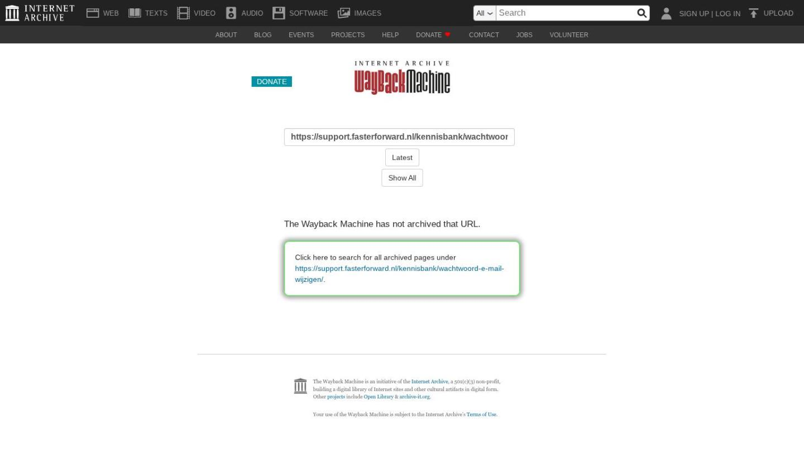

Fastlane Advies gebruiken

Tekstinhoud
Fastlane Advies gebruiken | Support
---
Fastlane Advies gebruiken
Met Fastlane Advies bereken je de hypotheek en stuur je deze eenvoudig naar eBlinqx om de aanvraag naar de geldverstrekker te sturen. Daarnaast bereken je snel en eenvoudig de verantwoorde hypotheekhoogte met de daarbij behorende woonlastenverzekeringen. Als output genereert het systeem een adviesrapport, de zogenaamde 'Haalbaarheidscheck'.
Fastlane Advies is een nieuw adviespakket met maandelijkse licentiekosten. Fastlane is voordelig te gebruiken als je PortefeuilleSignalen van De Nationale Hypotheekbond al gebruikt.
In dit artikel leggen we kort uit hoe je doelstellingen invoert, hypotheken vergelijkt, een adviesrapport opstelt en de hypotheekaanvraag doorstuurt naar eBlinqx.
Voor vragen over de werking van Fastlane, neem je contact op met 020 – 758 21 11 of info@portefeuillesignalen.nl.
Inrichten
Open Fastlane
Doelstellingen invoeren
Haalbaarheidscheck
Advies samenstellen
Hypotheken vergelijken
Adviesrapport downloaden
Aanvraag naar eBlinqx sturen
Aanvraag versturen naar geldverstrekker
Inrichten
Fastlane Advies is beschikbaar als koppeling met eBlinqx.
Als je Fastlane nog niet gebruikt, neem dan contact op via 020 – 758 2111 of info@hypotheekbond.nl. Kijk op de Fastlane website voor meer informatie over Fastlane.
Zodra je Fastlane gebruikt, geef je dit door aan support-eblinqx@blinqx.tech. Vermeld hierbij je organisatienaam en welke medewerkers Fastlane mogen gebruiken. Wij zorgen dan dat de koppeling wordt ingericht in eBlinqx, zodat je aanvragen vanuit Fastlane naar eBlinqx kunt sturen.
Open Fastlane
Ga in een klantdossier in eBlinqx naar het tabblad 'Fastlane'.
Relevante klantgegevens die reeds zijn ingevuld in eBlinqx worden automatisch ingevuld in Fastlane Advies. Voor het maken van berekeningen in Fastlane is de geboortedatum van belang. In het tabblad Fastlane wordt een oranje melding getoond als bij één van de personen die wordt meegestuurd naar Fastlane geen geboortedatum staat ingesteld. Zo word je erop geattendeerd dat de geboortedatum niet wordt meegestuurd met het verzoek deze alsnog in te vullen. De melding is niet blokkerend.
Wanneer je Fastlane voor de eerste keer gebruikt, zal je eenmalig jouw e-Blinqxaccount moeten autoriseren met Fastlane. In het tabblad verschijnt hiervan een melding met een link waar je dit kunt doen.
Doelstellingen invoeren
Kies een doelstelling zoals: een bestaande woning kopen, mijn woning verbouwen of mijn hypotheek oversluiten. Het aflopen van de rentevaste periode, risico afslagen en toekomstige rentewijzigingen worden weergegeven en meegerekend en een periodieke hypotheekcheck en toetsing vindt direct plaats.
Vul de verdere gegevens van de klant in. Wanneer je de postcode en het huisnummer invult wordt het energielabel en de RWWR-waarde van de woning opgehaald.
Als je alles hebt ingevuld, zie je aan de rechterkant de situatie van de klant visueel weergegeven.
Haalbaarheidscheck
In Fastlane Oriëntatie kun je de 'Haalbaarheidscheck' doen. Deze check geeft antwoord op de vraag: 'Kan ik deze woning kopen?' en 'Kan ik hier verantwoord blijven wonen?'
Je krijgt eenvoudig inzicht in de maximaal verantwoorde hypotheek per toetsrente en de impact van het naderende pensioen. Daarnaast krijgt de klant inzage in de verantwoorde maandlast indien hij tijdens looptijd werkloos raakt, arbeidsongeschikt wordt of indien zijn partner komt te overlijden. Fastlane rekent de tekortkomingen uit en voorziet deze van een verzekeringsoplossing inclusief de bijbehorende premie(s).
Advies samenstellen
Voeg de gegevens verder in en voeg de gewenste lening delen toe. Zo stel je het advies verder op.
Aan de rechterkant wordt na het aanpassen de verantwoorde bruto maandlast en het verantwoord hypotheekbedrag bijgewerkt. Klik hierbij op het ? icoon om de levensloop met bijbehorende bedragen nauwkeurig te bekijken.
Bij het onderdeel 'Verantwoord blijven wonen?' worden de situaties bij arbeidsongeschiktheid, werkeloosheid, overlijden, einde relatie en AOW uitgelicht.
Hypotheken vergelijken
Ga aan de linkerkant naar het tabblad 'Vergelijken' om de verschillende hypotheken te vergelijken. Je ziet hier alle geldverstrekkers die passen bij de ingevoerde klantsituatie.
Kies vervolgens de gewenste geldverstrekker door onderaan op 'Kies' te klikken.
Adviesrapport downloaden
Bovenaan kun je met de iconen rechtsboven een adviesrapport (PDF) te genereren.
Bij het genereren van het adviesrapport hoef je alleen nog de adviesmotivatie teksten toe te voegen. Hiermee voldoet het adviesrapport aan de richtlijnen van AFM.
Bekijk hier een voorbeeldrapport.
Het adviesrapport kan je eventueel in het klantdossier in eBlinqx uploaden onder het tabblad Documenten. Zet je dit bestand op publiek dan ziet de klant het rapport terug in Uwkluis.
Aanvraag naar eBlinqx sturen
Zodra je alle bovenstaande stappen hebt doorlopen, ga je aan de linkerkant naar 'Aanvragen'.
Aan de rode bolletjes zie je welke gegevens ontbreken om de hypotheek aan te vragen. Vul deze gegevens aan tot alle gegevens zijn aangevuld. Klik op 'Opslaan' als je tussentijds de aanvraag wilt bewaren om deze later aan te vullen.
Gebruik de 'Verzenden' knop rechtsboven om de hypotheekaanvraag naar eBlinqx te versturen.
Aanvraag versturen naar geldverstrekker
Na het verzenden vanuit Fastlane komt de aanvraag binnen als HDN bericht in de HDN inbox in eBlinqx.
Volg nu de werkwijze voor het versturen van de hypotheekaanvraag naar de geldverstrekker.
HYPOTHEEK AANVRAGEN
Laatste update: 15 oktober 2025
Was deze informatie nuttig?
Ja Nee